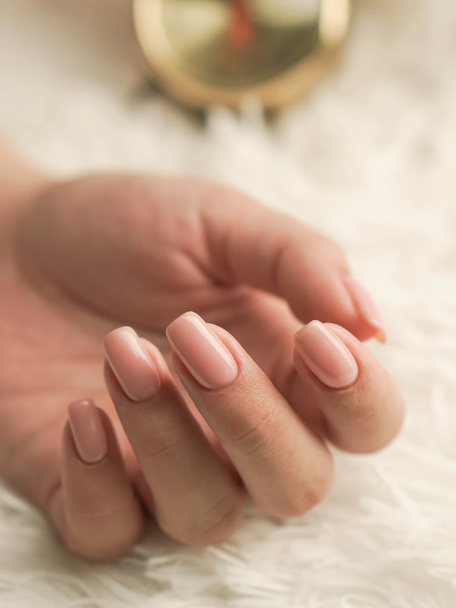

NAIL SALON CALME — JIYUGAOKA
オフィスで褒められる爪は、 夜、つくられる。
仕事帰りでも間に合う、平日22時まで営業のプライベートネイルサロン。
派手ではないのに、目を引く。そんな「品のある指先」をご提案します。
- 自由が丘駅 徒歩3分
- 平日22時まで営業
- 完全予約制・1席のみ

YOUR CONCERNS
こんなふうに、あきらめていませんか
- 壱
「派手なネイルは職場でNG。
かといって、何もしない指先は物足りない」 - 弐
「サロンはどこも19時まで。
残業のある私には、そもそも通えない」 - 参
「ジェルを続けていたら
自爪が薄く、傷んでしまった」
その3つ、すべてカルムが解決します。
「上品さ」と「通いやすさ」と「爪の健康」。働く女性のためだけに設計したサロンです。
3 REASONS
カルムが選ばれる、3つの理由
01
「オフィスOK」に特化した
デザイン提案
金融・医療・接客業など、お勤め先の規定に合わせて「どこまで許されるか」から一緒に考えます。肌が綺麗に見えるベージュ・グレージュを中心に、会議で手元を出しても浮かない、それでいて鏡を見るたび嬉しくなる絶妙なラインをご提案。
02
平日22時まで。
仕事帰りに「そのまま」通える
最終受付は20時30分。自由が丘駅から徒歩3分なので、18時に会社を出て、19時の施術に間に合います。完全予約制・1席のみのプライベート空間だから、疲れた日は会話を控えめに、静かに過ごしていただいても構いません。
03
爪を削りすぎない
「フィルイン」で長く付き合う
付け替えのたびにジェルを全部剥がすのではなく、ベースを残して付け替えるフィルイン施術が標準。自爪へのダメージを最小限に抑えるので、「ジェルで爪が薄くなった」方こそご相談ください。爪の状態に合わせたケアメニューもご用意しています。
VOICES
お客様の声
「銀行勤めなので半ば諦めていましたが、『規定内で一番きれいに見える色』を一緒に探してくれました。同僚に『手、きれいだね』と言われたのが嬉しくて、もう1年通っています。
「21時スタートでお願いできるサロンは初めて。残業デーでも諦めなくていいのが本当にありがたいです。静かな店内で、施術中うとうとしてしまうほど落ち着きます。
「他店で薄くなった爪をフィルインで立て直してもらいました。3ヶ月で折れにくくなり、今は月1の付け替えだけ。爪の健康まで見てくれるサロンです。
FAQ
よくある質問
予約はどうすればいいですか？
LINE公式アカウントを友だち追加のうえ、トークから「希望日時・メニュー」をお送りください。24時間受け付けており、当日中にご返信します。電話が苦手な方もご安心ください。
当日予約はできますか？
空きがあれば可能です。LINEで「今日入れますか？」とお送りいただければ最短でご案内します。1席のみのため、前日までのご予約が確実です。
職場の規定が厳しいのですが、相談できますか？
むしろ得意分野です。「肌色に近い範囲で」「ラメ不可」など規定の内容を教えていただければ、その範囲内で最大限きれいに見えるご提案をします。事前にLINEで規定を送っていただくとスムーズです。
支払い方法は何が使えますか？
現金のほか、各種クレジットカード・交通系IC・QRコード決済に対応しています。
デザインの持ち込みはできますか？
SNSの保存画像など、お好きなデザインをお持ちください。オフィス向けにトーンを調整しつつ、雰囲気を活かして再現します。追加料金はアートの本数に応じてご案内します。
ACCESS
アクセス・営業時間
- 店名
- Nail Salon Calme（カルム）
- 住所
- 東京都目黒区自由が丘1-2-3 カルムビル2F
※ 本サイトはポートフォリオ用のデモです（架空の店舗） - アクセス
- 東急東横線・大井町線「自由が丘駅」正面口より徒歩3分
- 営業時間
- 平日 11:00〜22:00（最終受付 20:30）
土日 10:00〜19:00 - 定休日
- 水曜・第3木曜
- ご予約
- 完全予約制／LINEにて24時間受付
RESERVATION
今週の仕事終わり、
指先だけ整えに来ませんか。
友だち追加のあと、トークで「予約希望」と送るだけ。
初回は他店ジェルのオフ無料＋カウンセリング15分をプレゼントしています。
※ デモサイトのためリンク先はサンプルです